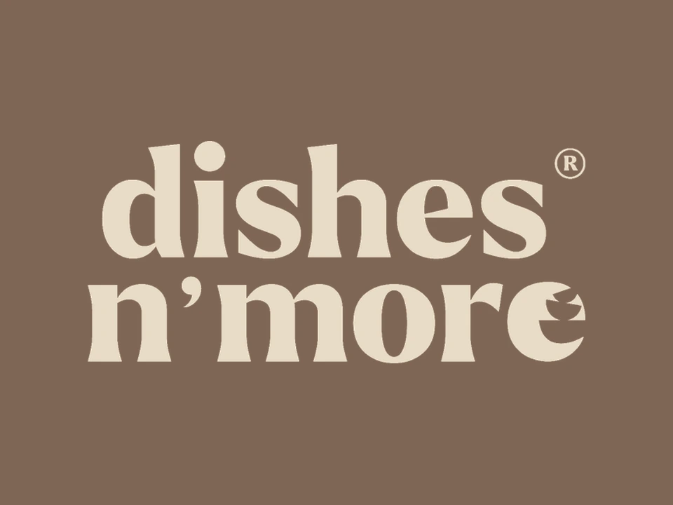

Case study 06
Dishes N'More
Dishes N'More, a premium tableware and kitchen utensils company, partnered with me to build a strong brand identity and establish its presence in the Egyptian market. When I began, online sales were driven mainly by heavy discounts of up to 50%, and monthly sales sat around 12,000 EGP. Through strategic branding, marketing, and performance-driven campaigns, the business grew into one of Egypt's leading tableware brands, generating over a million EGP in sales with an average return on ad spend of 1:15.
Christmas campaign
I refreshed the brand's visual identity and defined a clear photography direction, enabling the launch of a compelling advertising campaign that celebrated the occasion and connected meaningfully with clients.

Kitchen campaign
I carefully selected a kitchen setting aligned with the brand's visual identity and coordinated models, photographers, and operations to highlight standout products in the kitchenware category. The result was the successful production of 15 promotional videos and extensive product photography, complemented by lifestyle visuals that resonated with the brand's target audience.

Ramadan & seasonal designs

Dinnersets campaign
In a single day of shooting, I delivered five full photoshoots for social media videos covering 15 different dinner sets, ensuring every detail captured the unique experience and premium quality of the products.

Photography direction
- Closure shoots: elegant close-up shots highlighting materials, textures, and engravings to emphasize product value
- Food styling: carefully styled dishes with proportionally smaller food portions to highlight plate details and elevate product presentation
- Life shoots: lifestyle visuals that simulate real experiences with the products while reflecting the brand's visual identity
- Product shoots: clean product-focused shots without food, showcasing the full set, number of pieces, and overall design